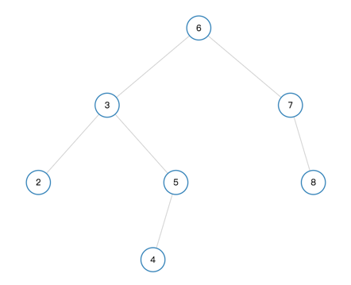
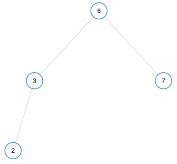

总结了一下删除二叉搜索树节点的迭代和递归方法。
1、二叉搜索树 二叉搜索树的重要性质：
2、删除二叉搜索树的节点 删除二叉搜索树的节点有三种情况。

第一种情况，比如删除节点4，只要把当前节点4直接删除即可。
2.1、迭代 deleteNode函数主要找到删除节点的位置。其中node是要删除的节点，pre是删除节点的父节点。
1 2 3 4 5 6 7 8 9 let pre = node;let cur = node.right;while (cur.left){ pre = cur; cur = cur.left; } node.val = cur.val; console .log(pre.left);pre === node ? pre.right = cur.right : pre.left = cur.right;
这段代码中cur是找到的最小节点，node是要删除节点，pre是最小节点的父节点。因为最后要删去cur所以，还是需要记录它的父节点pre。
1 2 3 if (pre===node){ pre.right=cur.right; }

如果是删除下图中的节点3，那么pre是节点5。
1 2 3 if (pre !== node){ pre.left = cur.right; }
完整代码和注释如下：
1 2 3 4 5 6 7 8 9 10 11 12 13 14 15 16 17 18 19 20 21 22 23 24 25 26 27 28 29 30 31 32 33 34 35 36 37 38 39 40 41 42 43 44 45 46 47 48 49 50 51 52 var deleteNode = function (root, key ) let node=root; let pre=null ; while (node!==null ){ if (node.val===key){ break ; } pre=node; if (node.val>key){ node=node.left; }else { node=node.right; } } if (node===null ){ return root; } if (pre===null ){ return del(node); } if (pre.left&&pre.left.val===key){ pre.left=del(node); }else if (pre.right&&pre.right.val===key){ pre.right=del(node); } return root; }; function del (node ) if (node.left===null &&node.right===null ){ return null ; } if (!node.left || !node.right) { return (node.left) ? node.left : node.right; } let pre=node; let cur=node.right; while (cur.left){ pre=cur; cur=cur.left; } node.val=cur.val; console .log(pre.left); pre===node?pre.right=cur.right:pre.left=cur.right; return node; }
2.2、递归 先判断根节点是否为空；
1 2 3 4 5 6 7 8 9 10 11 12 13 14 15 16 17 18 19 20 21 22 23 var deleteNode = function (root, key ) if (root===null ){ return null ; } if (root.val>key){ root.left=deleteNode(root.left,key); } else if (root.val<key){ root.right = deleteNode(root.right,key); } else { if (!root.left||!root.right){ root=root.left?root.left:root.right; }else { let cur=root.right; while (cur.left){ cur=cur.left; } root.val=cur.val; root.right=deleteNode(root.right,cur.val); } } return root; };